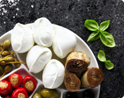
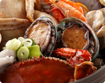

专业资讯
专业资讯
孕妇和儿童如何吃海参？孕妇和儿童如何吃海参
研究人员对8000多名孕妇进行研究，按照“每周摄入鱼和海鲜数量超...研究人员对8000多名孕妇进行研究，按照“

与海参相宜，相克的食材
研究人员对8000多名孕妇进行研究，按照“每周摄入鱼和海鲜数量超...研究人员对8000多名孕妇进行研究，按照“

海参怎么吃不浪费？
真正的野生海参一头小的几十元，大的上百元，即便是土豪也会珍...真正的野生海参一头小的几十元，大的上百元，即便是土豪也会珍...

海参怎么吃不浪费？
真正的野生海参一头小的几十元，大的上百元，即便是土豪也会珍...真正的野生海参一头小的几十元，大的上百元，即便是土豪也会珍...